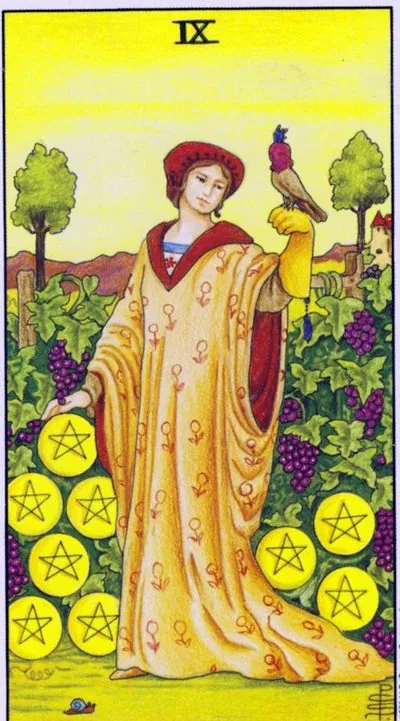

Minor Arcana · Pentacles
IXNine of Pentacles
A garden grown by itself: a well-deserved abundance, independence and the ability to finally enjoy the fruits of your labor.
Archetype and core meaning
An elegant woman stands in a well-groomed vineyard, a falcon in a bucket on her hand, everything is created by her efforts: garden, order, peace, the right to take a slow turn. Nine pentacles are a card of self-sufficiency achieved by work and discipline: man has built a life that should not be tolerated.
The Falcon is a tamed passion, a sense of impulse control, and it alludes to the loneliness of the garden, but chosen rather than forced. Venus in Virgo turns neatness into beauty, aesthetics as a form of self-respect. It's time to take off the apron of the worker and put on the hostess' beret: use the deserved without excuses.
Daily life
The life is radiant: the house is furnished to taste, the budget allows for joy without reporting, the day off belongs to you. The time of investing in quality is one good thing instead of three cheap ones. Spa, restaurant, day of silence: pleasure is no longer a sin, but the completion of the cycle of work.
Work and career
Professionally, you've reached the expert level: income depends on your competence, not on other people's decisions, the schedule is increasingly yours. You may be a freelancer, your own business, a narrow specialist with a name. The card advises you to consolidate the position: author's methods, personal brand, thoughtful investments earned in assets.
Relationships
You come into a relationship as a whole person, not a half person, and you need a partner as an equal gardener, not a lifeguard, not a project, and you have harmony, and you have space, and it makes you more interesting, and you have autonomy that attracts other adults.
Health
Health is a pride: regimen and prevention give you energy, sleep, even mood, good time for wellness programs and deep check-up, your body has long been on your side and will repay any care.
Spiritual meaning
The falcon in the cornea is the tamed will: desires are not killed, but trained to serve the master, that is the key to the magic of abundance. The garden of the card is a cultured soul. The practices of the nine are prosperity as a state of consciousness, gratitude aloud, caring for the living as a ritual, the ability to be alone with yourself without emptiness.
An empty garden with a full wallet: success stands on a showcase, and behind the facade - fatigue, dependence and loneliness.
Archetype and core meaning
The tangle has unraveled: the falcon has broken or turned out to be a decoration, the garden is overgrown, and the hostess continues to smile at the guests. The inverted nine is the external wealth that has separated from the inner content: prosperity on credit, independence-cell or labor that has eaten everything for which they worked.
A frequent plot is an imposter of wealth: life is portrayed by other people's standards, and the cost of the performance drowns the real budget. The other is the winner on the deserted top: there are trophies, there is no one to celebrate with. Both are treated by the question: for whom and why am I building all this?
Daily life
The house is nice, but it doesn't feel like home: the interiors of the magazine and the anxiety of the bill, the money goes to maintain the image, the real desires are put aside for years, and do a prop review: canceling a couple of status spending releases an unexpectedly large amount of air.
Work and career
Work has consumed life: careers are moving and there is no joy in them, vacations haven't been taken for years, income grows with fatigue, and perhaps success is held by one person, you, and that's a risk, not a compliment. The card recommends delegate, document processes, and remember why the business started: profit without pleasure is a bad deal with yourself.
Relationships
With the outer gloss, there is no warmth: the couple is beautiful in the photos and alien in the kitchen, someone gives things instead of time; lonely, the armor of self-sufficiency, under which the fear of letting someone into their territory hides; the wealth of the soul is measured not by the area, but by the number of doors open from the inside.
Health
Health is simulated: cosmetics hide sleep deprivation, coffee masks exhaustion, sports are replaced by buying uniforms, the body sends signals — hormones, sleep, nerves — and they are more persistent. The real luxury now is rest: full vacation, examination, treatment of accumulated. Pride should not cost more than a medical card.
Spiritual meaning
The golden cage of the spirit: energy is locked in forms of success that don't make sense; status egregors borrow and bill. Authentication: What would you want if no one ever knew? The answer will show a real garden that's worth growing.
🌿 How the school reads this rank
The main idea
Wealth and well-deserved rest: "I took off the apron of the worker" (eight) and put on a dressy one. The fruits are ripe and accumulated, I am not afraid of the future. "The rich is not the one who has a lot of money, but the one who knows how to earn them."
How it manifests
Work is rhythmic, income stable, buffer: you can rest safely knowing you'll always make money; finances have a sense of wealth (the "really" thing is a dozen); relationships have peace and confidence, you don't fix anything out of fear.
The shadow side
The feeling of wealth interferes: laziness, “fat mad”, spending beyond your means, entertainment instead of development.
Keywords
wealth · well-deserved rest · buffer · snail · small joys · spending beyond your means (translation)
📜 In detail — from the rank lecture
Essence of the card
Rich woman in the garden: the fruits are ripe, accumulated, not afraid of the future. Eight gave pleasure to the rhythm of work, nine gives calmness of results. The truly rich one who knows how to make money: "Even if I'm late, I won't be poor, I'll buy from another store."
Upright position
- Work/finance: work rhythm is set, income is stable, there is a buffer — you can go on vacation knowing that there is a job. Not the first harvest: the results are repeated, so the person is calm.
- Symbols: hunting falcon on the glove - falconry was fun for the nobility, not for food; a hint of rest, pleasure and physical activity (do not forget the body, fresh air, sports).
- Snail - you should move, but not in a hurry. Grapes are the little joys of life (Ranevskaya: you can not eat meat and drink - "but the face will become very sad").
- Wealth is here, not in the top ten: ten – “sufficient, enough”, nine – a sense of wealth (jumping ahead).
- Body: eat slowly, do not torment yourself with diets - choose a rich diet and alternate work with physical pleasures.
Negative meaning
It's a problem. Laziness, "getting fat mad," fun instead of development; spending is beyond your means -- money comes down "from the feeling of a master" (getting a salary, that's all). At work, a worker gets paid a lot, and he works up his sleeves. Someone wants to shake up your stability (teens believe that parents "roll in butter like cheese" - and the salary is already written for everything).
School emphases and distinctive points
- Rank logic: four - the first minimum and attempt to fix; seven - the fruits are visible; eight - working rhythm; nine - calmness and accumulated stock.
- In one of the alternative decks, a woman simply holds a bird - "a little wrong": it is the hunting bird on the glove that is important, a symbol of rich fun.
- Grapes - sweet "dessert" fruit, a connection with the Devil and the Three Cups: small pleasant desires that are sometimes worth pampering.
- In the layouts: "everything is more or less good - I like work, I don't really want a career, income is growing"; the card is active, but neat and slow.
- Roll call with the Empress: nega and luxury - right, if justified.
Keywords
wealth · well-deserved rest · falcon · snail · not to fear the future · buffer · small joys · laziness and spending beyond your means (translation)